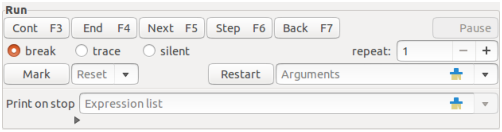

The Run part is available only if the debugger is used as runtime analyser (otherwise, the part is hidden).

Figure 2: The Run part.
When the debugger works as post mortem analyser it gets invoked by the following reasons:
In case of an interrupt the debuggee’s work can be continued by menu item File → Cont, otherwise a crash occurred and continuation is not possible. In both cases the Run part is not necessary, therefore it is not shown.
Things are different if the debugger works as runtime analyser. Additionally to the post mortem analyser the runtime analyser gets invoked by the reasons described in Sec. 3.4.1. The part is shown and the elements of the part control the stop-and-go behaviour of the debuggee.
Control switches forth and back between debugger and debuggee. More precisely, the debugger regains control for any of the following reasons:
In any case, when the debugger gets invoked then the expression list (if any) in text field Print on stop of the part will be evaluated and its values will printed on the Console part (see Sec. 3.7). The expressions are evaluated in the routine of the topmost call stack level. If the routine changed after a stop then the expression list disappears (names of local variables in the expressions are now invalid, maybe also query names) and reappears as soon as the routine is entered again with the same target type.
When the debugger got the control the debuggee may be continued
by means of the buttons on the top of the part.
In particular they have the following effect
(where n is the value of repeat):
| Button | Key | Meaning |
| Cont | F3 | continue to n-th occurrence of a breakpoint |
| End | F4 | continue to the end of the n-th nested compound |
| instruction, in particular leave loop clauses | ||
| Next | F5 | continue to the n-th instruction |
| without stepping into called routines | ||
| Step | F6 | do n steps, step also into called routines |
| Back | F7 | continue to the selected stack level |
| Stop | Pause | interrupt the debuggee |
The counter n is determined by the spin button repeat. Moreover the effect of Cont is modified by the radio buttons
The effect of button Stop is complementary to that of the other buttons. Quite naturally, also its sensitivity is complementary: if the debuggee has stopped for some reason then Stop is insensitive while the other “dynamic” buttons are sensitive, but if the debuggee is running then Stop is sensitive while the dynamic buttons (and most GUI elements) are insensitive. (The button label Stop is suppressed on some platforms in favour of the keyboard accelerator Pause. You may need to read Pause for Stop. )
Some remarks seem to be in order to explain when the Next and Step commands actually stop. Command Next stops before the next instruction. In particular, it stops at the keywords and special symbols do, once, from, until (each iteration), across, if, inspect, create (if an instruction), retry, :=, and ?=, as well as before a procedure call (qualified or not).
HintThese program points are those where a breakpoint can be set.
The stop of command Step is more involved. If stopped just before an instruction (e.g. as the result of a Next command) then the program continues to the next routine call or instruction; but if it stopped at (not before!) a routine call then the program steps into the routine and stops there at the do or once keyword (or at the end keyword in case of an already initialised once routine) what is considered stopping at an instruction. The two stages of the Step command have been introduced to be able to stop before nested function calls, and to make those stops visible. For example, consider the procedure call some_proc (some_func (arg)) (where for simplicity arg is not a function call) and suppose that a Next command stopped before the call:
some_proc (some_func (arg))
(the stop point is indicated in the Source part by green background, here by an overlined character). A following Step command continues to the call of some_func but does not yet enter the function (that’s for visibility):
some_proc (some_func (arg))
The next Step command jumps into the function, and after return (e.g. by command Back) the program is ready to enter the procedure by one more Step command (again for visibility not yet in the procedure):
some_proc (some_func (arg))
A similar role as the call instructions play for stepping into their argument expressions do the keywords create, if, inspect, until play for the expressions following them.
If some classes have been compiled without debugging information (see Sec. 2.3) then the continuation commands stop at the first possible position for which debugger information is available, in particular, the Step command stops at the first nested routine call for which debugging information has been generated (if any) or simply jumps over routine calls of the class. Nonetheless, even if debugger information is not generated the actual program positions are monitored, so the contents of the Call stack part is correct.
If the program stopped at a point where a breakpoint can be set (underlined in the Source part) then the program state (variables on heap and stack, once function values, and program point) may be stored to a file for later restoring during the same debugger session. The stored system state remains valid as long as the current routine is not left to its caller, otherwise, the stored state is silently discarded. Storing and restoring the system state may be used to approximate a critical program point more and more closely.
Clicking button Mark stores the program state and marks the program point to be recoverable. The program point is added to the combobox to its right. A program point in this combobox is recovered when selected. Then also marked program points not in the call stack up to the selected program point are discarded but marked points at the same call stack level remain valid. So, it is possible to jump forward and backward in the same routine call.
Warnings
- Non-Eiffel data, e.g. file contents, are not stored and restored. This may cause the program state to be incorrect after Reset.
- Store and restore make a deep traversal through the objects reachable from the current routine, so these actions may take some time.
- The program state is written to a binary file debuggee.mn in a temporary directory (n is a counter). This file should not be viewed or printed and must not be modified (it is deleted at end of the debugging session).
- Debugger settings such as breakpoint definitions are not stored and restored. So, any breakpoint definitions are preserved across the Reset command.
A special variant of restoring a previous program state is given by button Restart. The program start is marked automatically (but not shown in the Reset list) and restored, as the button name indicates, by clicking Restart. This form of restoring does even a bit more: the string in text field Arguments becomes the new command line arguments. After editing this field its contents does not present the actual arguments as long as the Restart button has not been clicked.
HintPressing the right mouse button in this text field pops up a menu showing how the string is parsed into separate arguments. The menu is for visualization only, clicking an item has no effect.
RestrictionArgument parsing works very well under Posix compliant operating systems, otherwise it is rather poor.